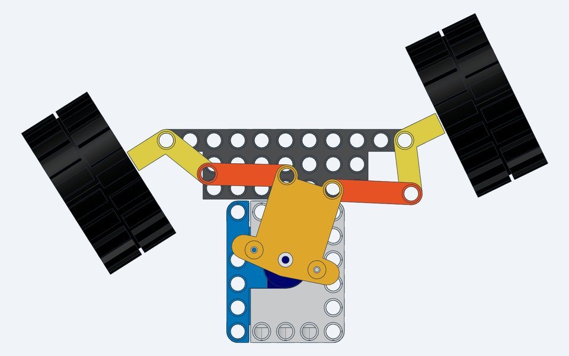
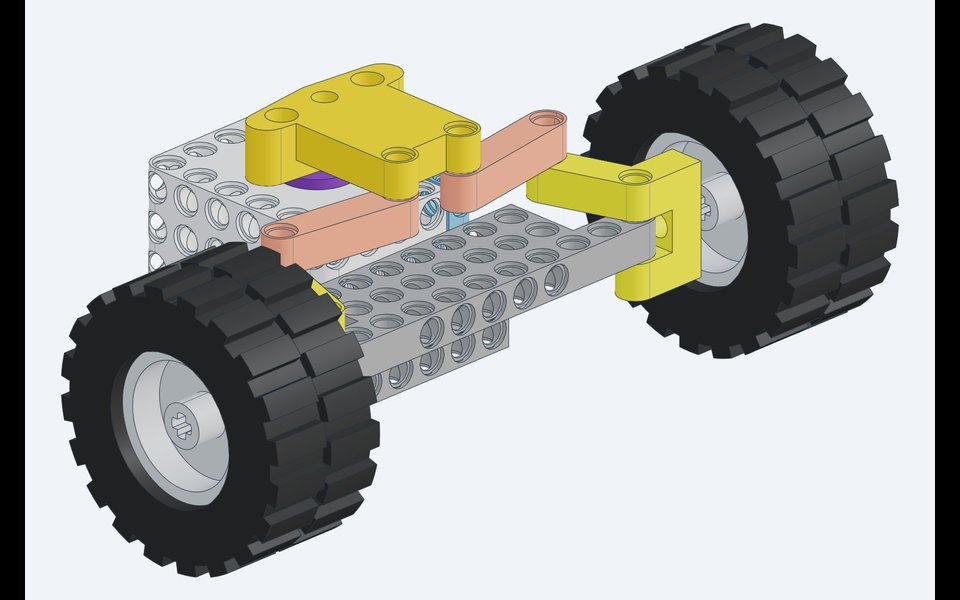

Linkages
連桿機構
用剛性桿件和接頭（銷、滑塊）連成一組，把一種運動轉成另一種運動，是最基本、最常見的機構。
常見種類
- 四連桿機構（Four-Bar Linkage）：四根桿以銷接成封閉迴路；改變桿長可得曲柄搖桿、雙曲柄、雙搖桿
- 曲柄滑塊機構（Slider-Crank）：旋轉與直線往復互換，引擎活塞、空壓機的核心
- 平行四邊形連桿（Parallelogram Linkage）：對邊等長，輸出桿始終保持平行，例如檯燈臂、火車動輪連桿
- 肘節機構（Toggle Mechanism）：接近死點時用小力產生很大的力，例如衝床、快速夾鉗
- 阿克曼轉向機構（Ackermann Steering）：轉向臂往內斜的梯形四連桿，轉彎時讓內輪轉得比外輪多，四輪輪軸線交在同一個轉彎中心；理論分析 →
葛拉索夫條件（Grashof Condition）：最短桿 + 最長桿 ≤ 另外兩桿之和，才有桿件能轉整圈。
生活中的應用
模型

阿克曼轉向機構Ackermann Steering
- 阿克曼條件推導：cot δo − cot δi = 主銷距 ÷ 軸距
- 伺服曲柄＋兩支拉桿：每側一組四連桿，用兩圓交點求輪子轉角
- 打到底內輪 32.3°／外輪 25.9°，全行程誤差最大 0.83°

轉向機構 3D 動畫與列印檔Model & Animation
- 9 步組裝動畫，轉向示範即時計算輪子轉角與阿克曼誤差
- FreeCAD 參數化零件、3MF 一盤列印檔（3D 列印作品集）
- LEGO Technic 相容，可裝到差速轉向車上
模型檔案與完整設計說明在 3D 列印作品集：MG90S 伺服機前輪轉向機構（阿克曼）、差速轉向車